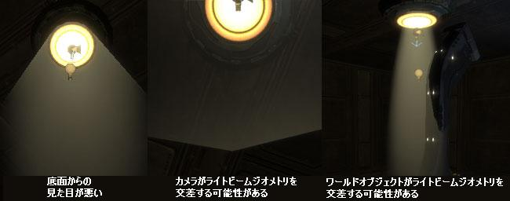
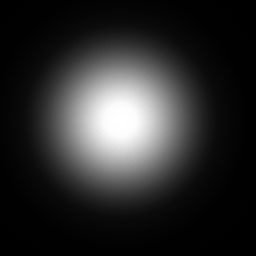
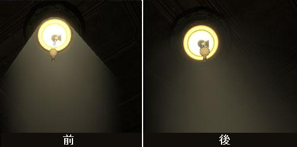
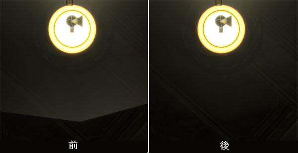
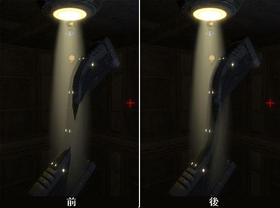
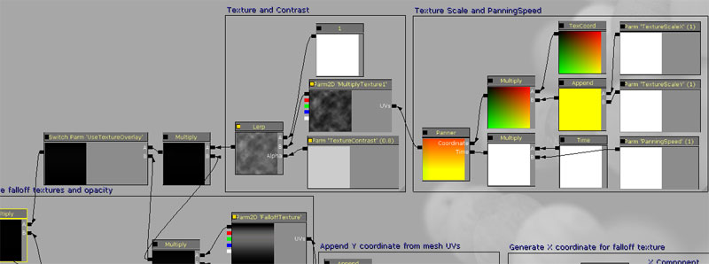

UDN
Search public documentation:
VolumetricLightbeamTutorialJP
English Translation
中国翻译
한국어
Interested in the Unreal Engine?
Visit the Unreal Technology site.
Looking for jobs and company info?
Check out the Epic games site.
Questions about support via UDN?
Contact the UDN Staff
中国翻译
한국어
Interested in the Unreal Engine?
Visit the Unreal Technology site.
Looking for jobs and company info?
Check out the Epic games site.
Questions about support via UDN?
Contact the UDN Staff
ボリュメトリック ライト ビーム チュートリアル
ドキュメント概要: ボリュメトリック ライト ビームを作成するためのガイド。 ドキュメントの変更ログ: Ryan Brucks により作成。はじめに
これは、説得力のあるボリュメトリック ライト ビームを作成するマテリアル技術を紹介するガイドです。円錐の静的メッシュに適用されたアンリット トランスルーセント マテリアルを使用し、フォールオフを用いてエッジを隠します。 何年もの間、ゲーム エンジンはボリュメトリック ライト ビームの様子に見せかけるのに似たような技術を使用してきましたが、もっともよく使用される技術は、遺憾な点が多いです。どうすれば偽物のライト ビームを、どの角度から見ても正常に見せることができるでしょうか？ プレイヤーがライト ビームの中を歩いたらどうなるでしょう？ ビームがワールド ジオメトリと交差するとどうなるでしょう？ いくつかの強力なマテリアル表現式のおかげで、Unreal Engine 3 は、少しの微調整で簡単にこれらの問題をすべて解決することができます。何を期待するべきか
このチュートリアルでは EngineVolumetrics パッケージの Master Lightbeam マテリアルを再現します。 完成したマテリアルの完全な名前は以下の通りです: \\Build\UnrealEngine3-Build\Engine\Content\EngineVolumetrics.LightBeam.Materials.M_EV_Lightbeam_Master_01 注記：\\Build\UnrealEngine3-Build\Engine\Content\EngineVolumetrics.LightBeam.Materials.M_EV_Lightbeam_Master_01_1sided_01 はlightbeamの内部を見る必要がない時に使用されます。この1sided バージョンはパフォーマンス面で使う羽目になることが多いです。 EngineVolumetrics は、4 つのタイプのボリュメトリック FalloffSpheres、FogEnvironments、Fogsheets、Lightbeams を含むための 4 つのグループを含むパッケージです。すべてのボリュメトリック プリミティブ タイプの中で、すべてのタイプからのほとんどの技術を 1 つのマテリアルに組み合わせられているので、Lightbeam をチュートリアルのマテリアルとして使用します。さまざまなタイプのボリュメトリック プリミティブとその使用法を説明したページは、 ボリュメトリック ライティング ガイド になります。 このマテリアルは、多くのインスタンスのペアレント マテリアルとして使用されるので、このチュートリアルは、インスタンス化のためにマテリアルのパラメータをどのように設定するかも説明します。マテリアルのインスタンス化の完全な説明は、 インスタンス化したマテリアル ページを参照してください。LightBeams
何を作成できるかには無限の可能性がありますが、簡単な円錐のフォールオフ タイプのビームを作成していきます。これらは多くの異なった方法に使用できます。ライト ソースからの輝きを投影するために小さくかすかにすることもできますし、雲の隙間から発するビームのような一筋の光にスケールアップすることもできます。これはレベルの既存の雰囲気にマッチするべきで、密度の高い距離フォグは、明るい雰囲気のレベルよりも密度の高いライトビームを使用するべきです。もちろん、これはアーティストの気まぐれや思いつきになります。 これらのライトビームの作成には 3 ステップあります。 1) ビームの形を定義する静的メッシュを作成します。 2) フォールオフ テクスチャを作成します。 3) マテリアルを作成し、すべてのアーチファクトがなくなるまで値を微調整します。
静的メッシュの作成
EngineVolumetrics パッケージは既に異なる角度で 3 つの円錐の変化形を持っていますが、これらはすべて同じ UV を持っています。このセクションでは、このマテリアルでよりたくさんのカスタム円錐メッシュを正常に機能させるには、何が必要かを解説していきます。 テーパ エッジを持った円柱を作成し、UV にシームが 1 つしかできないようにこれをアンラップします。マテリアル計算はタンジェント空間で行われ、粗雑な UV は後ほどビジュアル ディストーションの原因となるので、UV はクリーンであることが重要です。メッシュがテッセレートされていればいるほど、最終的な結果としてフォールオフはよりスムーズになります (4 つの垂直なスライスを持った 16 面体の円柱で大丈夫でしょう)。 EngineVolumetrics にある 3 つの円錐の変化形で、たいていの場合は用が足りるでしょう。
マテリアルの作成
マテリアルの作成は、プロセスの中でももっとも複雑な部分です。まず、ライトビームをもっとも基本的なレベルで機能させます。その後、それぞれのアーチファクトを 1 つずつ解決していきます。FalloffTexture
最初にフォールオフ テクスチャを作成します。フォールオフ テクスチャの外見は、最終的な結果の外見に大きく影響を与えます。このフォールオフ テクスチャは、完全に Photoshop の Render (レンダリング) -> Light Effects (ライト エフェクト) フィルタで作成されました。上部にぼやけた黒い線が 1 つ描かれています。 \\Build\UnrealEngine3-Build\Engine\Content\EngineVolumetrics.LightBeam.Materials. T_EV_LightBeam_Falloff_01 ここで注意する重要な性質は、テクスチャのすべてのエッジの周りは完全に黒くあり、テクスチャの上部は黒色に消えていくということです。これは、静的メッシュの上部のエッジの位置を隠すのに役立ちます。テクスチャ プロパティが Clamp (クランプ) に設定されていることを確認してください。マテリアル内のこのテクスチャ サンプルは TextureSample2DParameter なので、さまざまな異なったフォールオフ テクスチャをライトビームに使用することができます。
ここで注意する重要な性質は、テクスチャのすべてのエッジの周りは完全に黒くあり、テクスチャの上部は黒色に消えていくということです。これは、静的メッシュの上部のエッジの位置を隠すのに役立ちます。テクスチャ プロパティが Clamp (クランプ) に設定されていることを確認してください。マテリアル内のこのテクスチャ サンプルは TextureSample2DParameter なので、さまざまな異なったフォールオフ テクスチャをライトビームに使用することができます。
マテリアルのセットアップ
これで、マテリアルの作成を始める準備ができました。新しいマテリアルを作成し、マテリアル設定で以下のオプションを設定します。 BlendMode: BLEND_Translucent LightModel: MLM_Unlit TwoSided: True マテリアル入力フィールドは Emissive と Opacity の 2 つのみを使用します。Emissive フィールドは、ビームの色情報のみを含んでいるはずです。今のところは、シンプルな VectorParameter (1, 1, 1, 1) を Emissive に使用します。VectorParameter の Alpha チャンネルは、RGB によって掛けられます。これは、カラー ピッカーを使用して RGB 値 (<1 の値のみをサポート) を選びつつ、ライトビームを非常にエミッシブにすることができるように、Brightness (明るさ) の変更に関しては Alpha チャンネルを使用することができます。色から独立した光度を変更することができるのは、たいていの場合非常に便利です。
Opacity フィールドが、ほとんどの魔法が起きる場所になります。これは、ビームのフォールオフを処理し、ダストやスクロールするスモークを追加するために、テクスチャ情報を含みます。
上記のフォールオフ テクスチャを Opacity として使用します。フォールオフ テクスチャのテクスチャ座標には、Reflection Vector を使用して X コンポーネントを生成し、Y コンポーネントは静的メッシュの UV により提供されます。これは、テクスチャが静的メッシュの回転に対して X 軸に沿ってカメラに向かうようにします。X コンポーネントの作成には少し手間がかかります。
Reflection Vector は -1 から 1 の範囲の数を出力します。結果をテクスチャ座標として使用するので、数は 0 から 1 の範囲でなければいけません。0.5 で掛けて 0.5 を足すことで、簡単に Reflection Vector の範囲を 0-1 に変更することができます。
範囲が正常になると、AppendVector 表現式が、生成された X 座標を、静的メッシュの UV からの Y 座標と組み合わせます。この AppendVector の出力が、UV を FalloffTexture に提供する準備ができました。
マテリアル入力フィールドは Emissive と Opacity の 2 つのみを使用します。Emissive フィールドは、ビームの色情報のみを含んでいるはずです。今のところは、シンプルな VectorParameter (1, 1, 1, 1) を Emissive に使用します。VectorParameter の Alpha チャンネルは、RGB によって掛けられます。これは、カラー ピッカーを使用して RGB 値 (<1 の値のみをサポート) を選びつつ、ライトビームを非常にエミッシブにすることができるように、Brightness (明るさ) の変更に関しては Alpha チャンネルを使用することができます。色から独立した光度を変更することができるのは、たいていの場合非常に便利です。
Opacity フィールドが、ほとんどの魔法が起きる場所になります。これは、ビームのフォールオフを処理し、ダストやスクロールするスモークを追加するために、テクスチャ情報を含みます。
上記のフォールオフ テクスチャを Opacity として使用します。フォールオフ テクスチャのテクスチャ座標には、Reflection Vector を使用して X コンポーネントを生成し、Y コンポーネントは静的メッシュの UV により提供されます。これは、テクスチャが静的メッシュの回転に対して X 軸に沿ってカメラに向かうようにします。X コンポーネントの作成には少し手間がかかります。
Reflection Vector は -1 から 1 の範囲の数を出力します。結果をテクスチャ座標として使用するので、数は 0 から 1 の範囲でなければいけません。0.5 で掛けて 0.5 を足すことで、簡単に Reflection Vector の範囲を 0-1 に変更することができます。
範囲が正常になると、AppendVector 表現式が、生成された X 座標を、静的メッシュの UV からの Y 座標と組み合わせます。この AppendVector の出力が、UV を FalloffTexture に提供する準備ができました。
 現在のライトビームは以下のように見えます。
現在のライトビームは以下のように見えます。
 これは、よい出発点ではありますが、ライトビーム マテリアルは完全とは言えません。シーンに導入することのできるアーチファクトを見てみましょう。
これは、よい出発点ではありますが、ライトビーム マテリアルは完全とは言えません。シーンに導入することのできるアーチファクトを見てみましょう。

このガイドの始めの部分で解説しましたように、これらの問題のそれぞれは、適切なマテリアル表現式を使用することで解決できます。アーチファクトの修正
下から見ると見栄えが悪い
現在使用している方法 (厳密には X チャンネル フォールオフ) では、横から見た場合、ビームの見栄えを非常に良くしますが、下の角度から見た場合にほとんど役に立ちません。下から見た際のビームの見栄えを修正するには、2 つ目のフォールオフ テクスチャを使用して、既存のフォールオフ テクスチャで掛けます。2 つ目のフォールオフ テクスチャにはぼやけたドットを使用しました。
テクスチャ プロパティが Clamp (クランプ) に設定されていることを確認してください。 以前と同様に、Reflection Vector を使用して、2 つ目のフォールオフ テクスチャのテクスチャ座標を生成します。このテクスチャのテクスチャ座標には、Reflection Vector からの X と Y コンポーネントを使用します。よりうまくエッジを隠すのに微妙に調節するために、ReflectionVector(X,Y) は、定数によって掛けられます。ここでは、0.3 を使用しましたが、他の値でも大丈夫です。 今度は下から見ると、ライトビームは以下のように見えるはずです。
今度は下から見ると、ライトビームは以下のように見えるはずです。

もうハードなエッジが見えることはありません。まだハードなエッジが見える場合は、単にフォールオフ テクスチャか ReflectionVector(X,Y) の掛け算を微調整します。カメラの交差
PixelDepth ノードを使用して、トランスルーセント マテリアル内のどのようなピクセルの深度もサンプルすることができます。これを使用して、カメラの直前にあるピクセルをフェードアウトさせます。深度を定数で掛けることにより、フェードアウトが起きる距離をコントロールすることができます。定数には、インスタンスごとに変更することができるように、'Distance' と名前の付いたスカラー パラメータを使用します。通常は、設置するライトビームのサイズに基づいて、この値を変更します。大きなビームはずっと後ろの方からフェードアウトするべきですし、小さいビームはフェードし始める前にかなりカメラに近づくはずです。デフォルトに最適なのは 0.005 です。 この結果を 1 の最大にクランプすることが重要です。以前のフォールオフ テクスチャの結果で単純に掛けてください。 距離フェードが適用される前と後の画像です。
距離フェードが適用される前と後の画像です。

ワールド オブジェクトとライトビームの交差
ライトビームをワールド ジオメトリとの交差でフェードさせるには、DepthBiasedAlpha を使用します。 DepthBiasedBlendAlpha ノードを追加し、BiasScale を約 500 に設定します。'Density' という名前のスカラー パラメータが、ノードの Bias 入力で使用され、マテリアル インスタンスを介した深度バイアスのさらなる微調整を可能にします。 このマテリアルはインスタンスのペアレント マテリアルになり、depthbiasedalpha はどちらかというとコストの高い表現式なので、オン/オフがトグルできるように StaticSwitchParameter に接続します。そのデフォルトがオフであるようにセットアップされています。 DepthBiasedAlpha の技術は完全ではありませんが (ライトビームがボリュメトリックにシャドウされる原因となりません)、シーンから明瞭なアーチファクトを削除するのに立派な役目を果たします。
DepthBiasedAlpha の技術は完全ではありませんが (ライトビームがボリュメトリックにシャドウされる原因となりません)、シーンから明瞭なアーチファクトを削除するのに立派な役目を果たします。

仕上げのタッチの追加
パニング スモーク
StaticSwitchParameter を使用して、ビーム内でパニング スモーク テクスチャを有効化するオプションを与えます。追加のビーム メッシュを作成すると、スモーク テクスチャがタイルする場所でシームなしにパンできるように UV がきれいに円柱に 0 から 1 にアンラップされているべきである理由です。 テクスチャ パラメータが追加されました。これには、その挙動をコントロールするいくつかの他のパラメータがあります。ライトビームは通常、長さに沿ってスケールされるので、テクスチャは X と Y スケールで別々のパラメータを持ちます。また、パニング速度とコントラストのパラメータもあります。 以下がそのパラメータです。 TextureContrast: 線形はテクスチャを 1 の定数で補間します。 TextureScaleX: X に沿ってスケールします。 TextureScaleY: Y に沿ってスケールします。 PanningSpeed: パニング速度をコントロールする時間を掛けます。 以下がスクリーンショットです。
追加のパラメータ
最後に、付加的な Multiply と "Opacity" という名前のスカラー パラメータを追加し、ビームのオパシティのコントロールをマテリアル インスタンスに与えます。最終的な考え
マテリアルは最終的にこのように見えます。21 の指示で、このライトビームは、まだほとんどのリット マテリアルよりもコストがかかりません。UseDepthBiasedAlpha と UseTextureOverlay をオンにすると、指示カウントが 39 個に増えるので、StaticSwitchParameters は賢く使うようにしましょう。 次世代エンジンのライティング機能は注目されていますが、アンリット マテリアルの力量を見くびらないことも重要です。